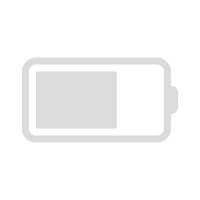
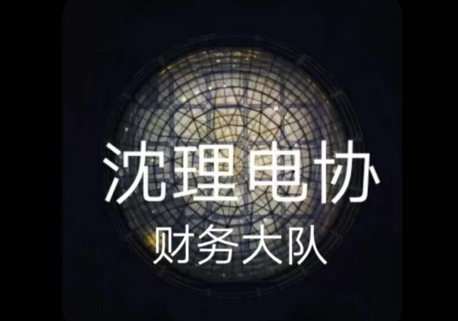
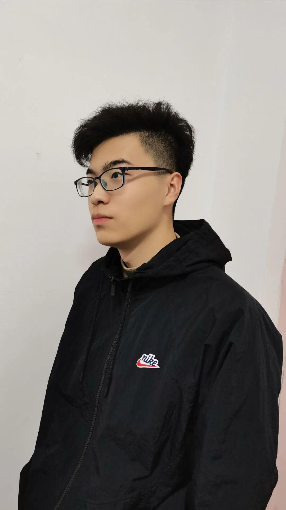
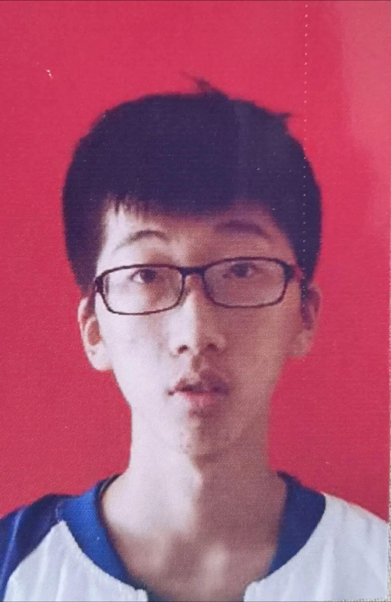

财务部——电协的“小算盘”
在电协财务部，不止遇见有趣的灵魂
中国移动
01:35
72%

微信(135)
大一小萌新
请问，沈理电协财务部的职责是什么啊？
1.与社联财务部对接，负责每次活动费用的申请，以及每月账单的制作与上交。
2.负责采购社团日常活动所需的物资。
3.负责社团各项活动费用的发票开取与保存。
4.负责登记社团活动所支出的费用记录归纳，并且负责社团物资的摆放与整理。

作为学长，欢迎大一的萌新们！

大家好，我是物联网工程的一名大一学生，平时喜欢看电影、打篮球、跑步。在电子技术与应用协会这个大家庭中，认识了许多的朋友，也学会了不少的东西，希望电协变得越来越好，有更多的同学加入电协。

我是电协中的一员，19岁。住在沈理男生宿舍一带，未婚。我在Ambition战队上班。每天都要加班到晚上10点才能回家。我不抽烟，酒也只喝一点点。晚上12点一定睡觉，每天要睡足7个小时。

本人，不丑不帅。走在巴黎街头不影响市容。也不至于让其他男生心花怒放。学历不高不低。能基本看懂冰箱英文说明书。但也不会无聊到整天研究哲学讨论狭义相对论。作为电协一份子，还是希望大家多多关注我们电协。
以上就是财政部的所有人员了，这些小哥哥你心动了吗？心动了就加入我们电协的大家庭吧！希望大家在日后的日子里一起努力，让电协这个大家庭变得越来越温馨，越来越好吧！
排版|孙瑛桀
图片|财务部